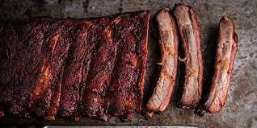

Smoked Ribs

Description:
Nothing beats a rack of rib fresh off the smoker. Especially when the meat falls off the bone.
We will be using the 3-2-1 method to ensure delicious ribs. This involves smoking directly for 3 hours, wrapping the ribs for 2 hours, and then sauce for 1 hour.
Ingredients / Tools:
- 1 Rack of St Louis Ribs
- Rib Rub
- Smoker and pellets
- Apple Cider Vinegar in spray bottle
- Butcher paper
- BBQ Sauce
- Mustard
Instructions
- Preheat the smoker to 250 F.
- Clean up the ribs and dry thorughly.
- Apply mustard to ribs.
- Apply rib rub to the ribs.
- Place ribs on smoker.
- After 30 minutes, spray ribs liberally with apple cider vinegar. Repeat 3 times.
- Spray apple cinder vinegar in a sheet of butcher paper. Wrap ribs and place back on smoker.
- After 2 hours, unwrap ribs.
- Brush BBQ sauce on ribs in 15 minute intervals. Pull off anytime between the 2nd and 4th application.